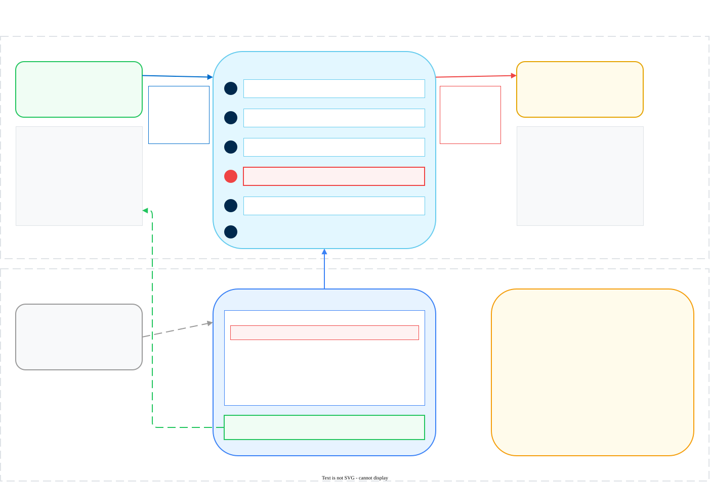
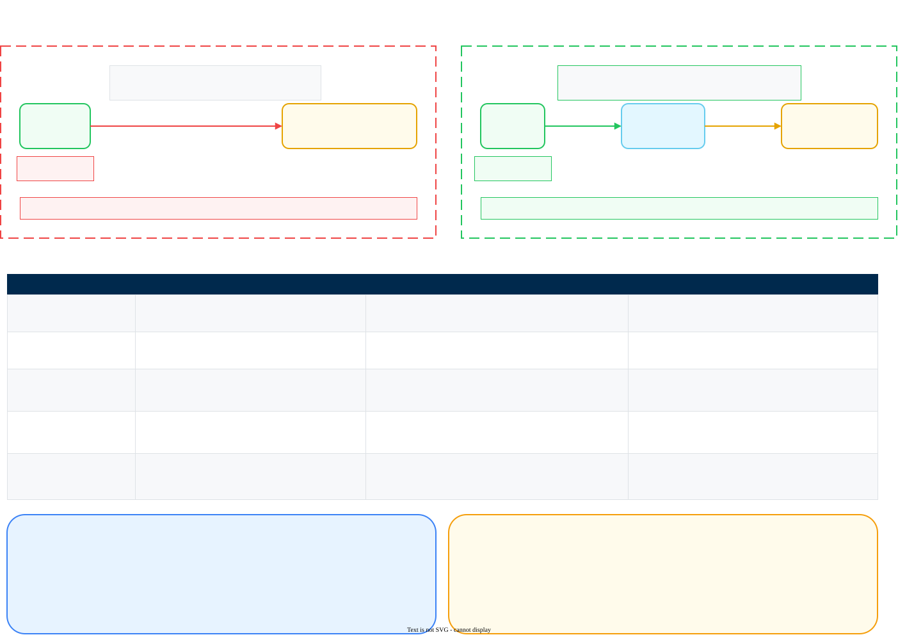
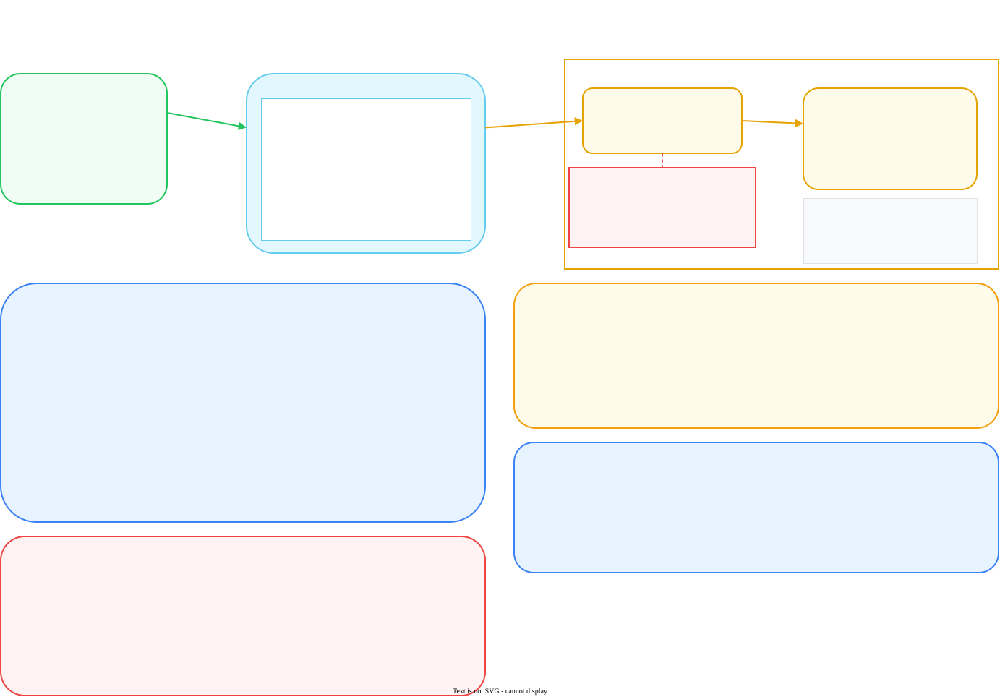
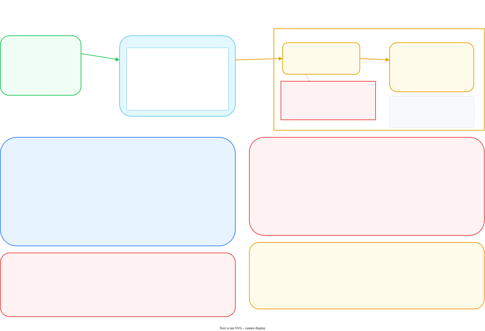
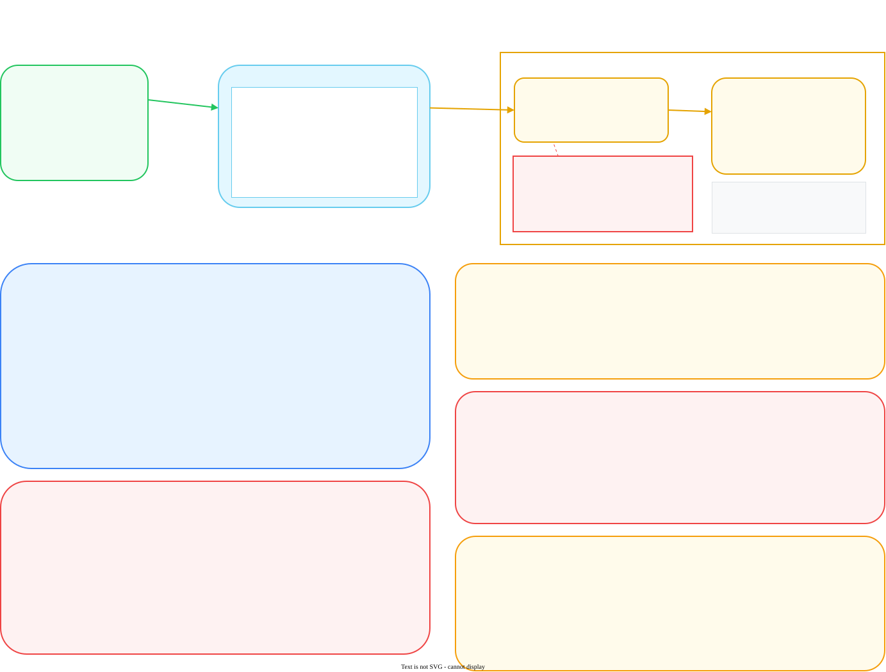
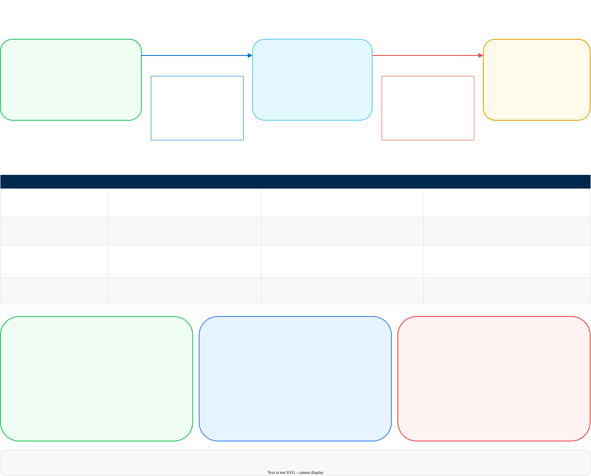
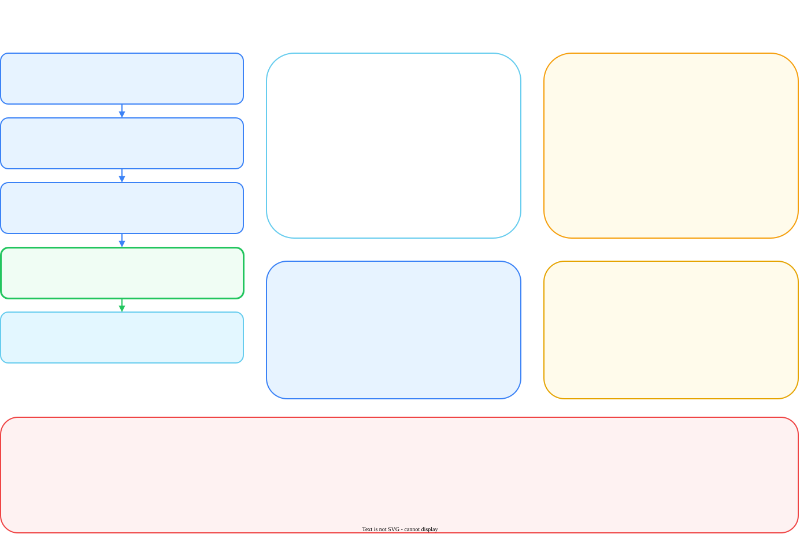
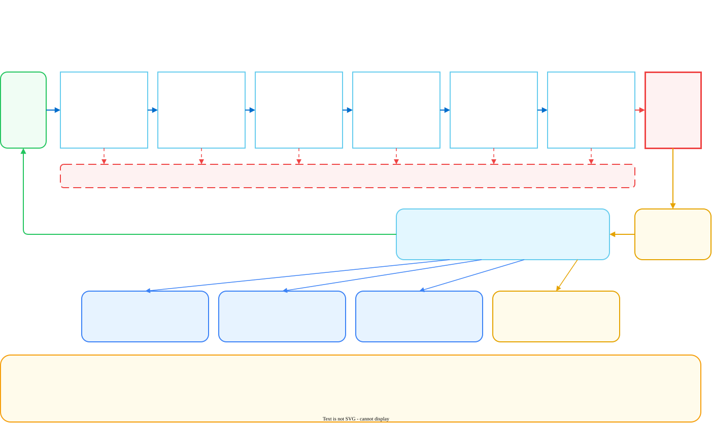

Each diagram is layered on purpose. The boxes and arrows carry the conceptual story that an architect or an exec can follow in one pass. The monospace insets carry the actual headers, environment variables, and field names, so the same page also works as a build reference on a deployment call. Nothing is duplicated between the two layers.
Sources are .drawio, exports are .svg (25 to 45 KB each, light mode pinned, no raster fallback). Both sit next to this page in docs/guides/ai-gateway/diagrams/, so every diagram below is editable. Open a .drawio file in diagrams.net, edit, then re-export with clean-svg.py in the same folder.
Answers: why the keys are essential, and how the credential is actually swapped.

The whole diagram exists to make step 4 land: the gateway strips the caller's key and attaches the provider credential. That single swap is what makes every downstream control possible, because the provider will only ever see one caller.
Answers: how the gateway gets inline, and what elements are required.

The table is the part a customer will screenshot. Every row has a failure column, because most cutover problems are one of these five values being subtly wrong rather than anything about the gateway itself.
The gateway is opt-in per application. Nothing forces traffic through it by routing, DNS, or a proxy setting. An app that still points at the provider endpoint keeps working and stays completely invisible to the gateway, which means coverage is an application inventory exercise, not a deployment task.
The requested Bedrock case, built on standard Amazon Bedrock with an IAM credential.

The same structure as Bedrock, plus the scope distinction that trips up most OpenAI conversations.

sk-proj- key. One OpenAI key lives in the integration record, and the OpenAI usage dashboard collapses to a single caller as a result.This is the one to raise on the first call. ChatGPT in a browser, the desktop app, and the mobile app have no base URL setting. There is nothing to point at a gateway, so that traffic never reaches Observability and no budget, allowlist, or guardrail touches it.
When a customer says "we use ChatGPT", establish which one they mean. Code calling api.openai.com from an SDK, an agent framework, or a CI job is exactly what the gateway covers. People typing into chatgpt.com is a network egress policy, a CASB or SASE control, or ChatGPT Enterprise's own admin and compliance tooling.
The same split applies to Claude.ai against the Anthropic API, and to a Copilot surface against the Azure endpoint behind it. Naming the split on the first call avoids a scope argument at cutover, because "we are governing our AI usage" turns out to mean two different projects.
The Azure case, where the naming discipline matters more than the wiring.

gpt4o-prod or chat-eu. That name is what the app sends, what goes on the allowlist, and what appears in every log row. A rename in Azure breaks every caller and surfaces as a model-not-found rather than an auth failure, which sends people looking in the wrong place.This diagram carries the most unconfirmed detail of the eight. The deployment guide records the Azure integration form's exact field set as not yet captured, so the red box is longer here than elsewhere on purpose.
The client-side half of the picture, and the only path in this set that has been run end to end.

The other diagrams face a provider. This one faces the client, which is where cutover actually fails. The four-column table exists because each variable has a distinct failure mode, and the third one is the one everybody forgets.
ANTHROPIC_BASE_URL — Strata Cloud Manager displays the address with a /v1 suffix, and Claude Code appends its own /v1/messages. Drop the suffix or the path doubles.ANTHROPIC_AUTH_TOKEN — while it is set it takes precedence over a saved claude.ai login, and the session banner changes to API Usage Billing. That is expected, not an error. The login stays saved and comes back the moment the variable is unset.ANTHROPIC_CUSTOM_HEADERS — Claude Code sends bare model names rather than @slug/model references, so without the provider header every prompt fails with 400 Either x-portkey-config or x-portkey-provider header is required.The wiring in this diagram comes from a section of the deployment guide that was run live and screenshotted, so the values, the error strings, and the precedence behaviour are observed rather than inferred. The green callout gives the four proof steps in the order that isolates the fault fastest: echo the variable, curl the gateway, run /status, then look for the row in Observability.
First, where the key is allowed to be written. Never in a project's .claude/settings.json, because that file is committed and shared with everyone who clones the repository. Use the user-level ~/.claude/settings.json, or the gitignored .claude/settings.local.json for a single project.
Second, one key per developer or one for the team. A shared key makes Observability show one caller for the whole team, and revoking it after a leaver takes everyone offline at once. A key per developer gives per-person cost and clean revocation, at the price of issuing and tracking them. Either way, put the person or team in the key's metadata tags at issue time, because that is the only thing the logs can group by later.
Claude Code is only the worked example. Any client that accepts a base URL override follows the same pattern with no application logic change, which is the point the footer bar makes.
Answers: how billing is defined, what data is captured, and where group information comes from.

This is the question that prompted the diagram, and the answer is counter-intuitive enough to be worth stating plainly. SSO and Cloud Identity Engine govern who can log into Strata Cloud Manager. They do not tag traffic, and there is no directory group carried on the request.
Groups are JSON metadata tags you attach to each gateway API key. Those tags flow into the logs, a budget or rate policy in Policies & Profiles matches on a Condition Key with includes and excludes lists, and Group by Key then applies the cap per value of that key rather than to the matched set as a whole.
The consequence: the metadata schema is the chargeback model. It has to be agreed before the first key is issued, because budget limits never apply retroactively and keys already in production carry their old tags until they are reissued.
The per-request pipeline, including every place a call can stop and where the record lands.

This is the troubleshooting diagram. Each gate shows the error a caller actually receives, so a support conversation can start with the error string and land on the right gate immediately.
PII detection and content moderation are deliberately not gateway guardrails. They belong to AI Runtime, which brings advanced DLP and threat detection. If the customer needs inline scanning for prompt injection, data leakage, or malicious content, the gateway alone does not cover it and needs to be paired with AIRS API Intercept.
Ten points that a customer conversation tends to skip past. All ten changed the diagrams and are baked into the artwork rather than left as speaker notes.
| Gap | Why it matters | Where it appears |
|---|---|---|
| The gateway is opt-in | Nothing forces traffic through it. An app still pointing at the provider endpoint works fine and is invisible. Coverage has to be closed with egress policy or by revoking direct provider keys. | Diagram 2, bottom right; diagram 8, bottom right |
| Consumer AI apps cannot be fronted at all | ChatGPT, Claude.ai, and other browser or desktop apps have no base URL setting, so they can never route through the gateway. If the customer's mental model of "our AI usage" is the app rather than the API, half the programme is a CASB or SASE conversation, not a gateway one. | Diagram 4, the red headline box |
| Two separate money flows | Flex credits and provider spend are different numbers in different consoles. Finance will reconcile them and find they do not match, because they are not meant to. | Diagrams 3, 4, and 5; diagram 7 |
| Provisioned capacity breaks cost reconciliation entirely | With Azure PTU, or any committed capacity arrangement, provider spend is fixed and does not track tokens. Gateway cost figures are then an allocation tool only, and presenting them as a bill forecast will lose credibility with Finance. | Diagram 5, two meters callout |
| Provider naming discipline is a prerequisite | Azure deployment names are typed by hand at deploy time and are what the app, the allowlist, and every log row carry. Agreeing a convention before provisioning costs nothing; retrofitting one breaks every caller. | Diagram 5, deployment name callout |
| Metadata schema is the chargeback model | It must be agreed before the first key is issued. Budget limits are never retroactive and issued keys carry their old tags. | Diagram 7, right panel and bottom callout; diagram 6, second rollout decision |
| Limits cannot be edited once set | Budget and rate limits cannot be changed by any organization member after creation. Getting them wrong means recreating the object. | Diagram 7, bottom right |
| Data residency under SaaS | Prompts leave the customer environment before reaching the provider, even when the model sits in the customer's own AWS account or Azure subscription. This is the argument for Hybrid, and it should surface in design rather than at cutover. | Diagram 3, "Where the prompt physically goes" |
| PII and moderation are out of scope | They are AI Runtime functions, not gateway guardrails. A customer who assumes the gateway covers DLP will be disappointed at test time. | Diagram 8, bottom left |
| Per-user attribution is not automatic | A shared application key attributes to the application. Per end-user cost or audit has to be designed in deliberately, and depends on how per-request metadata is accepted. For developer tooling this becomes a one-key-per-developer decision with real revocation consequences. | Diagram 7, bottom centre; diagram 6, red callout |
These diagrams were drafted with external research unavailable: WebSearch is blocked by an organization policy on this account, WebFetch is not available, and outbound curl was denied. None of the provider-specific detail below was checked against an external source, so it is the single most useful thing for a reviewer to attack.
Everything in the eight diagrams is grounded in repository material instead: the PAN reference page configure-ai-gateway.md, the existing AI Gateway deployment guide, the LLM API key management guide, and the AI Gateway TRD. Where a claim could not be grounded that way, it is called out on the diagram rather than asserted. Diagram 6 is the exception: its wiring comes from a guide section that was run live and screenshotted.
sts:AssumeRole) instead of holding a static access key. Many security teams will not issue long-lived AWS keys at all, so this can be a blocker.This is the longest list, because the deployment guide records the Azure integration form's exact field set as still to be captured.
api-version is a field you set on the integration or is pinned by the platform. It changes which request shapes work.Two more worth confirming in the tenant while you are there: whether per-request metadata headers are accepted and logged, which decides whether per-user attribution is even possible, and whether the SaaS base URL differs by region now that availability is Americas only.
If these work, the natural placement in ai-gateway-deployment.html is one diagram per phase rather than a gallery:
| Diagram | Placement |
|---|---|
| 1. How the API key gets into the app call | Phase 1 overview, or the concepts section, wherever the two-key model is first introduced |
| 2. Getting the gateway inline | The client wiring phase, immediately above the environment variable block |
| 3. Fronting Amazon Bedrock | The integration phase, inside the Bedrock tab |
| 4. Fronting OpenAI | The integration phase, inside the OpenAI tab. The red scope box may also be worth lifting into the guide's opening scope section, since it reframes the whole engagement. |
| 5. Fronting Azure AI Foundry | The integration phase, inside the Azure tab, next to the existing TODO(provider-azure-openai) marker |
| 6. Routing Claude Code through the gateway | The Claude Code section, above the three exports. The four-column table could replace prose the guide currently carries. |
| 7. Attribution and billing | Phase 5, above the Policies & Profiles walkthrough |
| 8. Single request lifecycle | The troubleshooting or reference section at the end |
Wiring them in is deliberately not part of this change. The guide itself is untouched, so this page can be reviewed, argued with, or rejected without anything to unpick. If the set is approved, the follow-up is lazy-loaded img tags with italic captions inside the relevant collapsible bodies of ai-gateway-deployment.html.